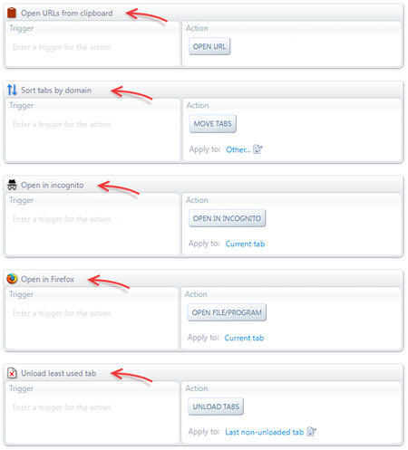
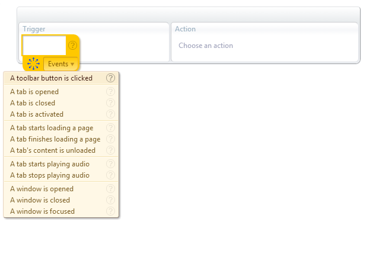

Keyboard shortcuts are not always the most convenient way to access all the actions you've defined.
Actions that are not used regularly enough don't require instantaneous access at your fingertips.
In those cases, a menu with clickable items is a better alternative. It provides easy access without clutering the keyboard with hard-to-remember
combinations.
Let's see how to use a toolbar button to deploy such a menu, as shown in the image on the right.
Check out Custom Toolbar Buttons if you haven't added any custom buttons yet.
The first step is to create the actions that will populate the menu. Then we must add a descriptive name and icon to each of those actions, as shown below:

Now we can create the trigger-action pair that will open the menu when clicking the toolbar button.
Go through the steps in the following slide show to accomplish that: Step 0/0: undefined

That's it. Now whenever you click on the toolbar button 4, a menu with your actions will pop up.
See the following articles if your are interested in some of the actions you see in the above menu.
 Forum
Install now from theChrome Web Store
Forum
Install now from theChrome Web Store